第4章 放大器基础
I. 基本概念
性能指标
- 在下面的讨论中, 注意各物理量的方向:
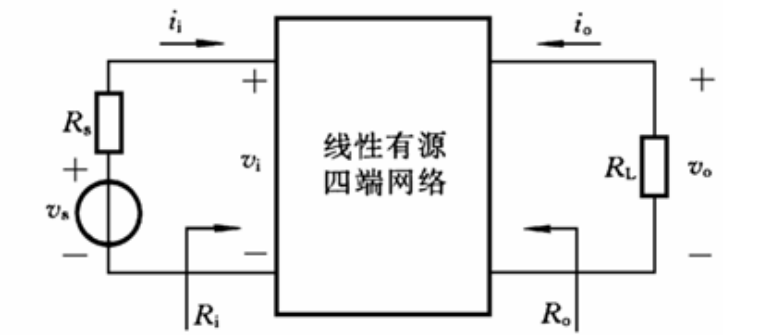
- 输入输出电阻:
- 输入电阻: Ri=iivi.
- 输出电阻: Ro=iovo.
- 在求输出电阻时, 需要将输入端电压源短路/电流源断路.
- 在放大器性能的讨论中, 一般用 Ro 表示从负载 RL 看的输出电阻; 用 Ro′ 表示管子输出端的电阻.
- 增益:
- 电压增益: Av=vivo.
- 电流增益: Ai=iiio.
- 同理有互导增益 Ag, 互阻增益 Ar.
- 几种增益之间, 可以进行互相转换. 例如, Av=−RiRL. 其中负号来自于方向的规定.
- 源增益:
- 电压源增益: Avs=vsvo=AvRi+RsRi.
- 与电压增益的差异来自电阻分压, Rs 越小, 两者越接近.
- 电流源增益: Ais=AiRs+RiRs.
- 与电流增益的差异来自电阻分离, Rs 越大, 两者越接近.
- 频率响应: 可以写出复增益为 A(jω)=A(ω)ejφ(ω).
- 画出幅频曲线图. 其中 fL,fH 对应3dB点. 定义通频带为: BW0.7=fH−fL.
- 失真: 分为线性与非线性.
- 线性失真: 某个频率分量的幅度或相位发生变化.
- 非线性失真: 产生了新的频率分量.
- 用总谐波分量(THD) 衡量. 满足: THD=I1mn=2∑∞Inm2.
II. MOSFET基本放大器
共源放大器
- 交流通路与小信号等效:
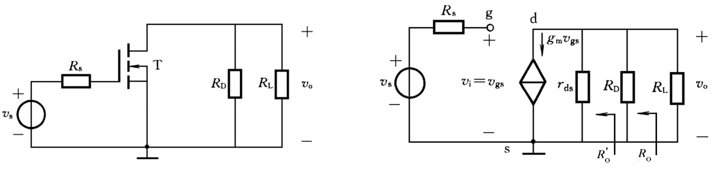
- Ri=∞ (输入断路)
- Ro=rds//RD.
- Ro′=rds.
- Av=−gmRL′.
- 其中, RL′=rds//RD//RL, 指输出端所有电阻.
- Avs=Av.
- 为了提高增益, 负载常常使用有源电阻.
- 一般用于电压放大.
- S极存在电阻的情况: 在 Rs 之上做小信号等效.
- 电路图与小信号等效:

- R0′=Rs+(1+gmRs)rds.
- Av=1+gmRs−gmRL′.
共栅放大器
- 电路图与小信号等效: (其中, 已经应用了关系 vGS=−Vs )
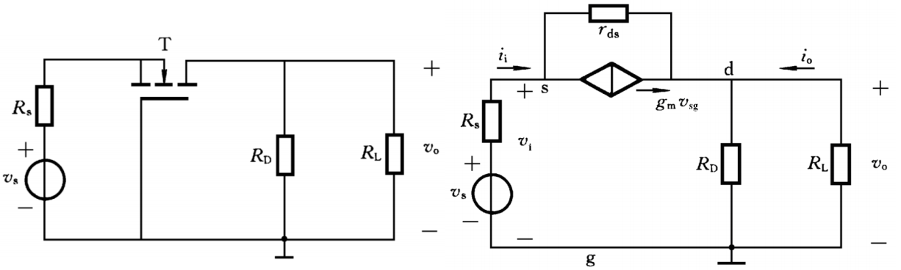
- Ri=1+gmrdsrds+RL′≈gm1.
- Ro′=Rs+(1+gmRs)rds. (与S极含电阻的共源完全相同)
- Ro=Ro′//RD≈RD.
- Ai≈−RD+RLRD.
- Av=−AiRiRL=gmRL′.
- 输入电阻小, 输出电阻大, 且 Ai→1, 适合做电流传输器.
共漏放大器
- 电路图与小信号等效: (其中, vGS=vi−vo)
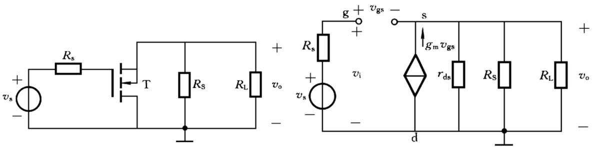
- Ri=∞.
- Ro′=rds//gm1≈gm1. (因为此时电压源被短路, vGS=−vo)
- Ro=Ro′//RS≈gm1.
- Av=1+gmRL′gmRL′.
- 可以看出, Av<1 且满足一定条件时有 Av→1.
- 输入电阻大, 输出电阻小. 适合做电压传输器.
总结
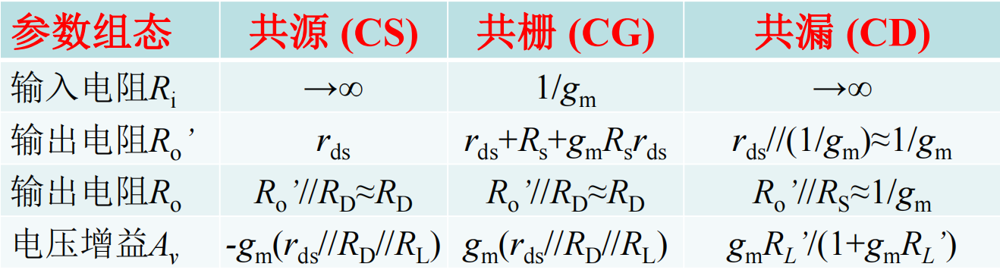
III. 集成MOS放大器
全部采用有源电阻作负载. 在这部分中, 重要的是正确做出小信号等效. 包括 g,d,s,b 各级的位置, 电压源 gm,gmb 的位置, 电阻 rds 的位置等.
E/E MOS
- 电路图与等效:
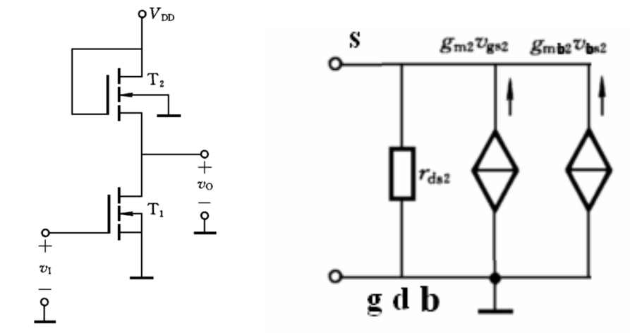
- 其中, T1为放大管, T2为负载管.
- Rds=rds21+gm2+gmb21.
CMOS
- 采用互补结构.
- 电流源负载CMOS:
- 电路图:
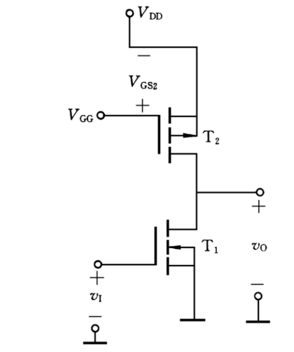
- RL′=rds1//rds2.
- 推挽CMOS:
- 电路图与等效:
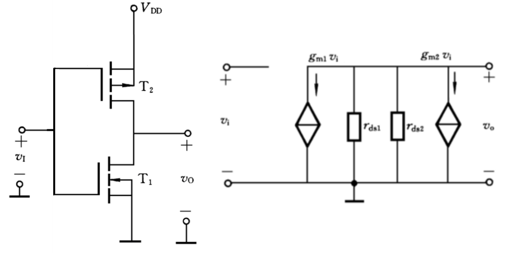
- Av=(gm1+gm2)(rds1//rds2).
有源电阻负载的共栅
- 电路图:
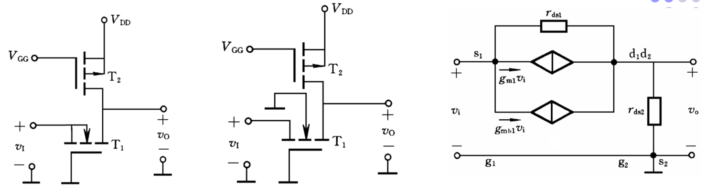
- Av=(gm1+gmb1)(rds1//rds2).
有源电阻负载的共漏
- 电路图:
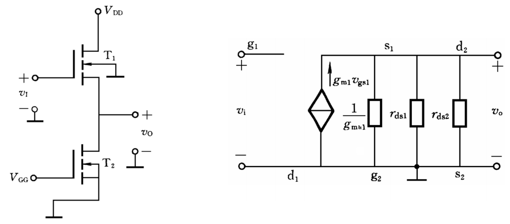
- T1为放大管, T2为负载管.
- Av=gm1⋅gm1+gmb1+1/rds1+1/rds21≈1+η11.
IV. BJT基本放大器
共射放大器
- 电路图:
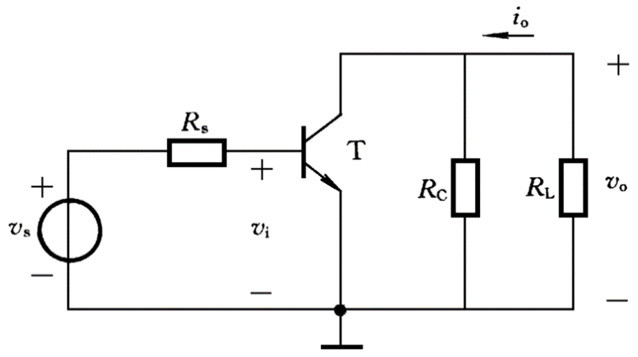
- Ri=rbe=rbb′+rb′e.
- Ro′=rce.
- Ro=Ro′//RC≈RC.
- Ai=βRo+RLRo.
- Ao=−AiRiRL=−gmRL′. (与共源相同)
- 极限增益: RC,RL→∞ 时, 有 Avmax=−gmrce=VT∣VA∣.
- 接入有源负载: 实现极限增益的一种方法.
- 用另一个三极管替代 RC, 则其交流电阻仅有 rce. 若两个三极管相同, 则有 RL′=21rce.
- 电路图及等效:
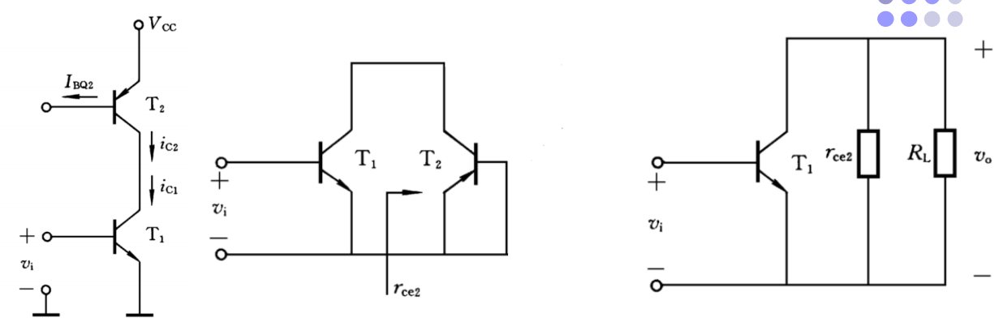
- E极存在电阻的情况(不考虑隔直电容时): 与直流工作点计算, 同样采用折算方法.
- Ri=rbe+(1+β)RE.
- Ro=Ro′//RC≈RC.
- Av=−βrbe+(1+β)RERL′.
- (1+β)RE≫rbe 时, Av≈−RERL′.
- 电路图与等效:
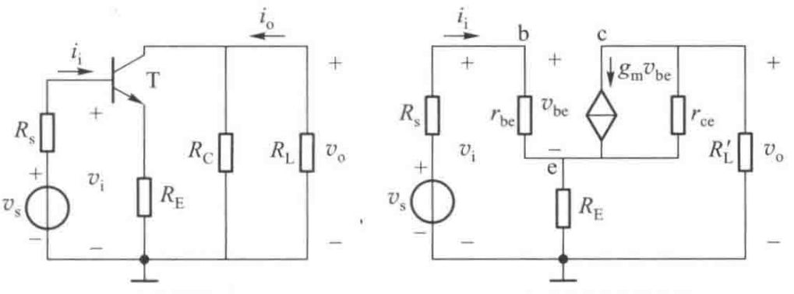
共基放大器
- 电路图与等效:
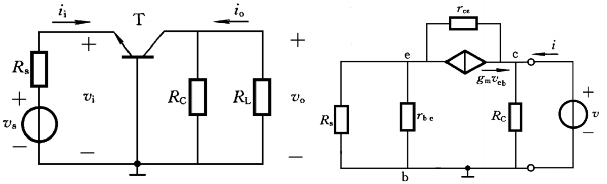
- Ri=1+βrbe≈gm1.
- Ro′=(Rs//rbe)+[1+gm(Rs//rbe)]rce.
- Ro=Ro′//RC≈RC.
- Ai=−αRC+RLRC. (α≈1)
- Av=−AiRiRL≈gmRL′.
- 同样地, 可以用作电流传输器.
共集放大器
- 电路图:
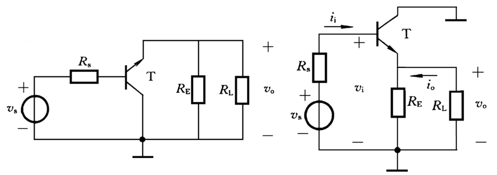
- Ri=rbe+(1+β)(RE//RL).
- Ro′=1+βRs+rbe.
- Ro=RE//Ro′.
- Ai=−(1+β)RE+RLRE.
- Av=−AiRiRL≈1+gmRL′gmRL′≈1.
- 可以用作电压传输器.
总结
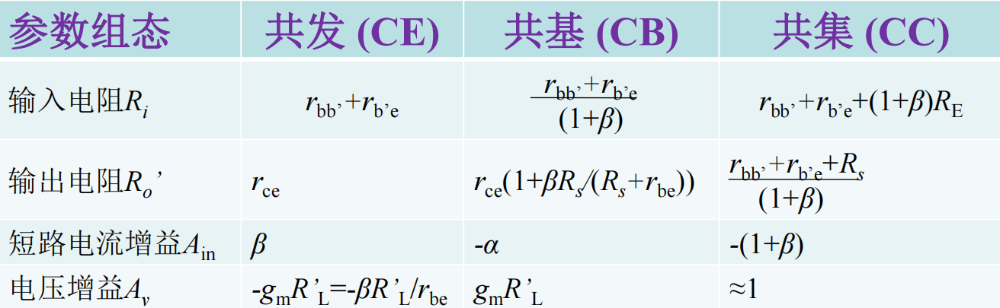
V. 组合放大器
在组合放大器(多级放大器)的参数计算中, 下一节的输入电阻可以作为上一节的输入电阻. 同时, 总增益等于各级增益相乘.
共集-共射放大器(达林顿电路)
- 电路图:
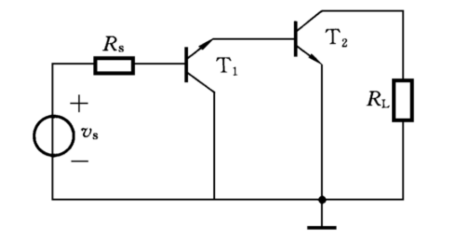
- Ri=rbe1+(1+β1)rbe2.
- 仍有 Av≈−gmRL′.
- 输入电阻大大提高, 使得 Avs≈Av, 有效减少了衰减.
共集-共基放大器
- 电路图:
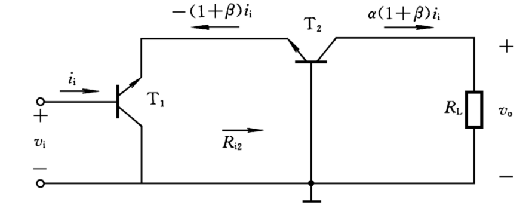
- Ri=rbe1+(1+β1)1+β2rbe2.
- 两个BJT相同时, Ri=2rbe.
- 若上述条件成立, Ai=−β,Av=21gmRL.
VI. 差分放大器
- 构成: 2个对称的共源/共射放大器.
- 对于任意一对信号, 总可以将其分解成差模部分与共模部分.
- 差模信号: vid1=−vid2=21vid. 其中, vid 是所谓"差模信号".
- 共模信号: vic1=vic2=vic.
- 分解方法: vi′=2vi1+vi2±2vi1−vi2.
性能特点
- 差模等效:
- 等效电路:
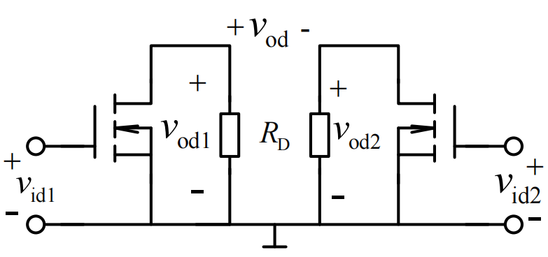
- Avd=vid1−vid2vod1−vod2=−gmRD.
- Avd1=21gmRD,Avd2=−21gmRD.
- 极性关系: 交叉同向.
- 共模等效:
- 等效电路:
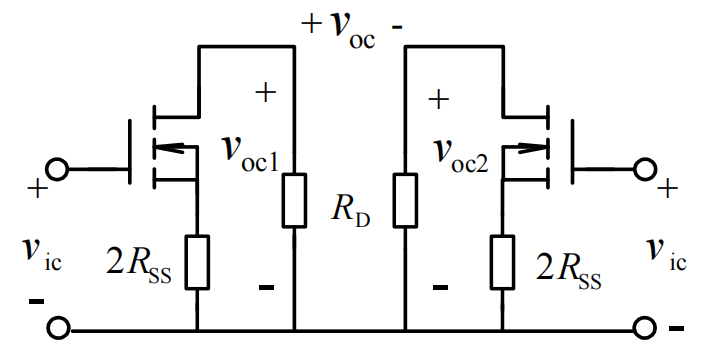
- Avc=1+2gmRss−gmRD≈−2RssRD≪Avd.
- 共模抑制比: KCMR=Avc21Avd=gmRss.
- 对三极管差放, 上述结论完全相同(除了电阻的名称可能有所差别). 然而, 若基极存在电阻, 将对增益存在影响:
- Avd′=Avs=−gmRcrbe+Rsrbe.
- 电路不对称的影响:
- 失调电压: vI=0,vo=0.
- 解决方法: 在输入端加反向电压, 或引入调零电阻(与Vss相连).
- 温漂: 半导体材料由于温度产生的特性变化. 调零电路无法消除温漂.
- 差模传输特性:(单端输出情况)
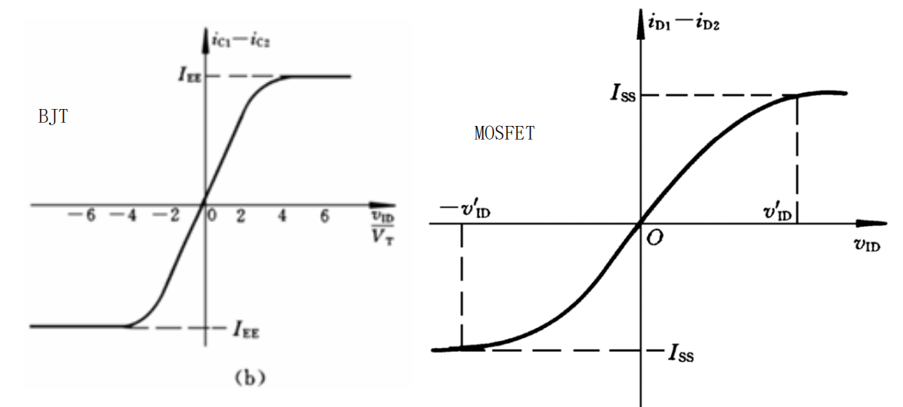
- 差放的工作范围在斜线区内. 否则, 将进入限幅区.
VII. 电流源
BJT镜像电流源
- 基本镜像电流源:
- Io=1+β2IR. 其中 β2 为镜像误差. IR=RVcc−VBE(on)
- 含有许多温度敏感的量, 会造成电流不稳.
- 减小 β 影响的电流源:
- Io=1+β(1+β)2IR.
- 比例式电流源:
- Io≈IRR2R1.
- 注: 电流与对应的电阻成反比.
- 微电流源: 比例式电流源中, 令 R1=0.
- Io≈R2VTlnIoIR.

MOSFET镜像电流源
与BJT电流源大致相同, 但栅极无电流流入.
- 基本镜像电流源:
- Io=(W/l)1(W/l)2IR.
- 此时, 电流与对应的宽长比成正比.
- 其他改进型电流源:
- 级联电流源: 利用产生的电压钳位.
- 威尔逊电流镜: 输出对输入产生负反馈作用.
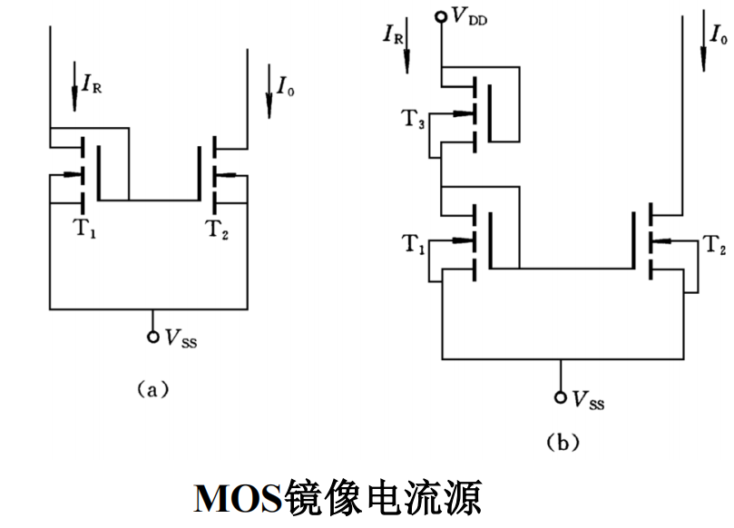
电流源的应用: 有源负载差放
- 采用电流源作负载, 使得差放得以单端输出.
- 与电阻负载的不同之处在于. 差放的双转单输出, 无需乘0.5. 这是电流镜像的效果.
- Avd=gm(rds2//rds4).
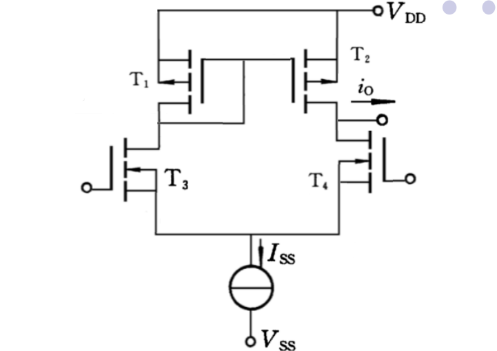
VIII. 放大器频率响应
- 传递函数: A(s)=ui(s)uo(s).
- 传递函数总可以写作如下形式: A(s)=A0(1+ωp1s)⋯(1+ωpns)(1+ωz1s)⋯(1+ωzns).
- A0: 中频响应.
- ωp: 极点.
- ωz: 零点.
渐进波特图
- 横坐标为 ω, 但取对数坐标. (1格表示10倍频程)
- 幅频响应: 每个极/零点, 向上/下拐.
- 一个极/零点生成20dB/10倍频程的斜率, 多个可叠加.
- 相频响应: 每个极/零点, 生成向上/下的"三折线".
- 0.1ω0 处, 生成向上/下, 45°/10倍频程的斜线.
- 10ω0 处, 变回水平直线.

- 上, 下限频率: 在波特图中, 中频增益就是增益为一段水平直线的区域. 因此, 容易根据波特图直接看出上下限频率.
- 对于重极点情况, 波特图计算上限频率时误差较大. 此时有: ωH=ωP=2n1−1.
- ωP: 重极点频率.
- n: 极点重数.
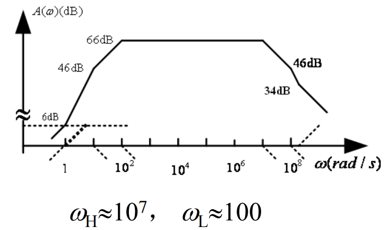
密勒定理
- 跨接网络的电抗元件可等效至网络的输入与输出端.
- Y1(s)=∣A(s)∣Y(s).
- Y2(s)=Y(s).

共源放大器频率特性
- 根据密勒定理, 可以将栅漏电容 Cgd 等效至输入, 输出两端.
- 传递函数为两极一零系统. 在近似下, 可以看作是单极点系统, 仅具有上限频率 ωP.
- ωP=Rs(Cgs+gmRLCgd)1.
- 增益带宽积: GBW=∣Avsl⋅fH∣.
- 一般是个定值. 因此, 提高带宽必须靠牺牲增益来实现.
下一章: 放大器的负反馈